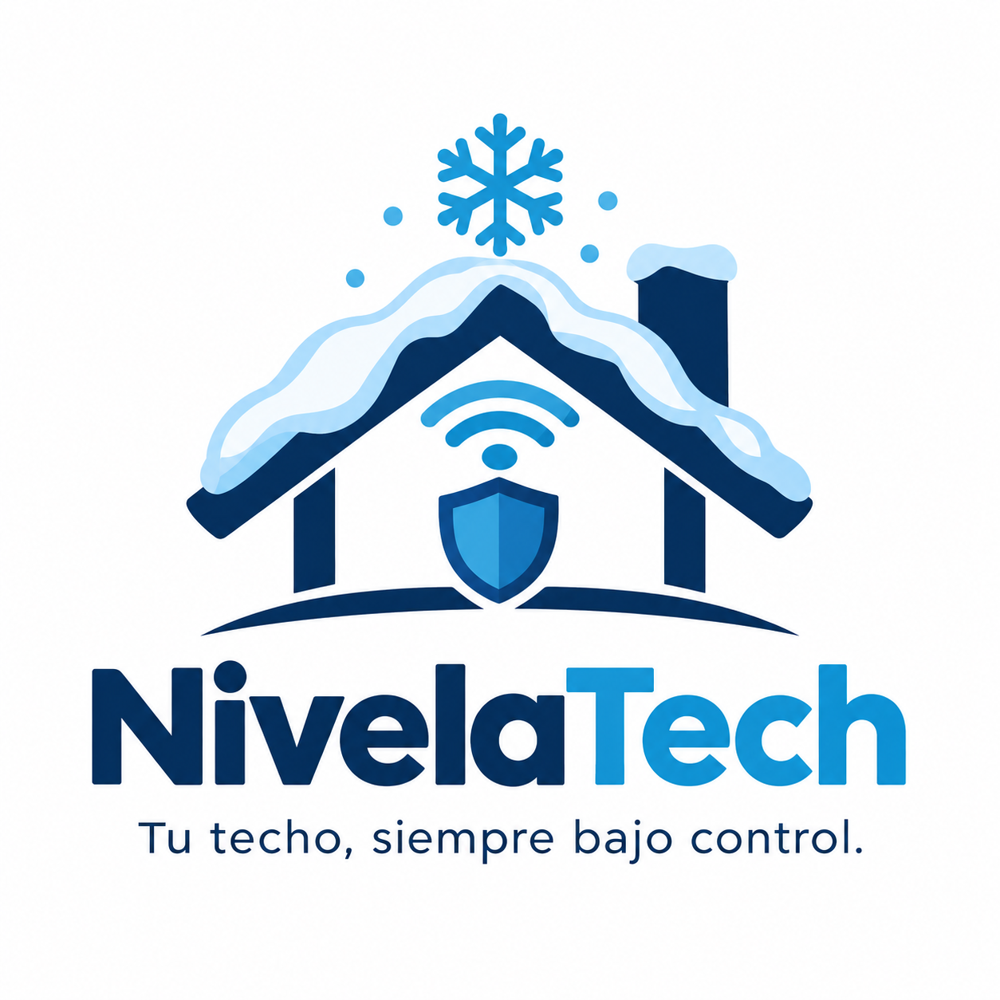

La nieve pesa
Un metro cúbico de nieve puede pesar entre 100 y 400 kg, según su humedad y compactación. La carga sobre un techo puede aumentar rápidamente.

NivelaTechUn sistema inteligente que monitorea la nieve acumulada en tu techo y te avisa cuando las condiciones pueden convertirse en un peligro.
Monitoreo continuo
Una alerta a tiempo puede marcar la diferencia.
En localidades cordilleranas, las nevadas intensas pueden acumular grandes cantidades de nieve sobre los techos y generar riesgos que no siempre son visibles a tiempo.
Un metro cúbico de nieve puede pesar entre 100 y 400 kg, según su humedad y compactación. La carga sobre un techo puede aumentar rápidamente.
El exceso de carga puede deformar las estructuras y provocar daños en casas, galpones, quinchos y refugios de montaña.
Muchas casas de fin de semana y refugios quedan vacíos durante el invierno. Sin monitoreo, el problema puede detectarse demasiado tarde.
El dispositivo trabaja de manera autónoma y transforma las mediciones en una alerta fácil de entender.
Un sensor de temperatura detecta las condiciones ambientales y uno de inclinación controla posibles cambios en la estructura del techo.
Una placa Arduino compara las lecturas con los valores definidos y clasifica la situación según el nivel de riesgo.
Cuando detecta una condición de riesgo, activa una alarma sonora y luces indicadoras para llamar la atención.
Temperatura: -5 °C | Inclinación: PELIGRO
Una solución pensada para acompañar la vida en zonas donde la nieve y las heladas forman parte del invierno.
Una caja protectora pensada para resguardar los componentes de la lluvia, la nieve, el polvo y el viento.
Monitorea de forma continua y activa las señales de aviso cuando identifica una situación que requiere atención.
Se plantea para colocarse en la estructura del techo y adaptarse a casas, galpones, quinchos y refugios.
Dos alternativas para cuidar tu espacio durante la temporada de nieve.
Protección esencial para tu casa.
$ 89.900
Más tranquilidad para espacios exigentes.
$ 129.900
Escribinos para conocer más sobre NivelaTech y sus opciones.
Podés comunicarte con nuestro equipo por los siguientes medios.
contacto@nivelatech.com
+54 9 297 507-3748
Patagonia Argentina